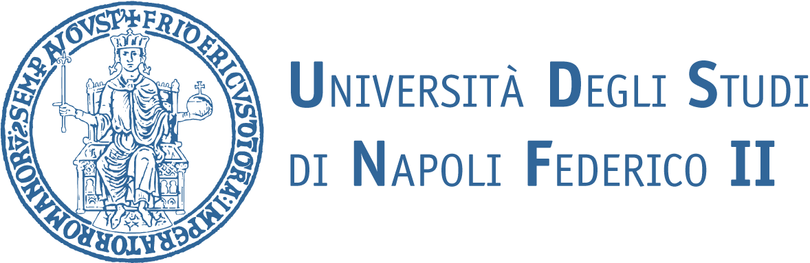
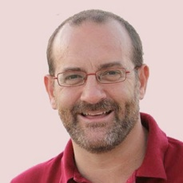
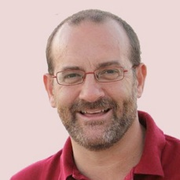
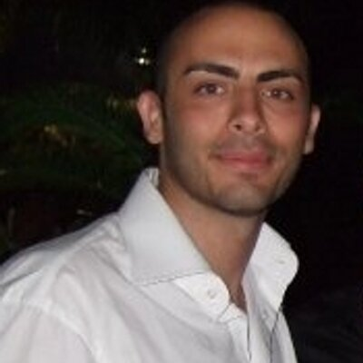
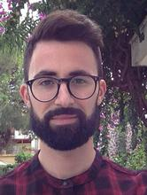
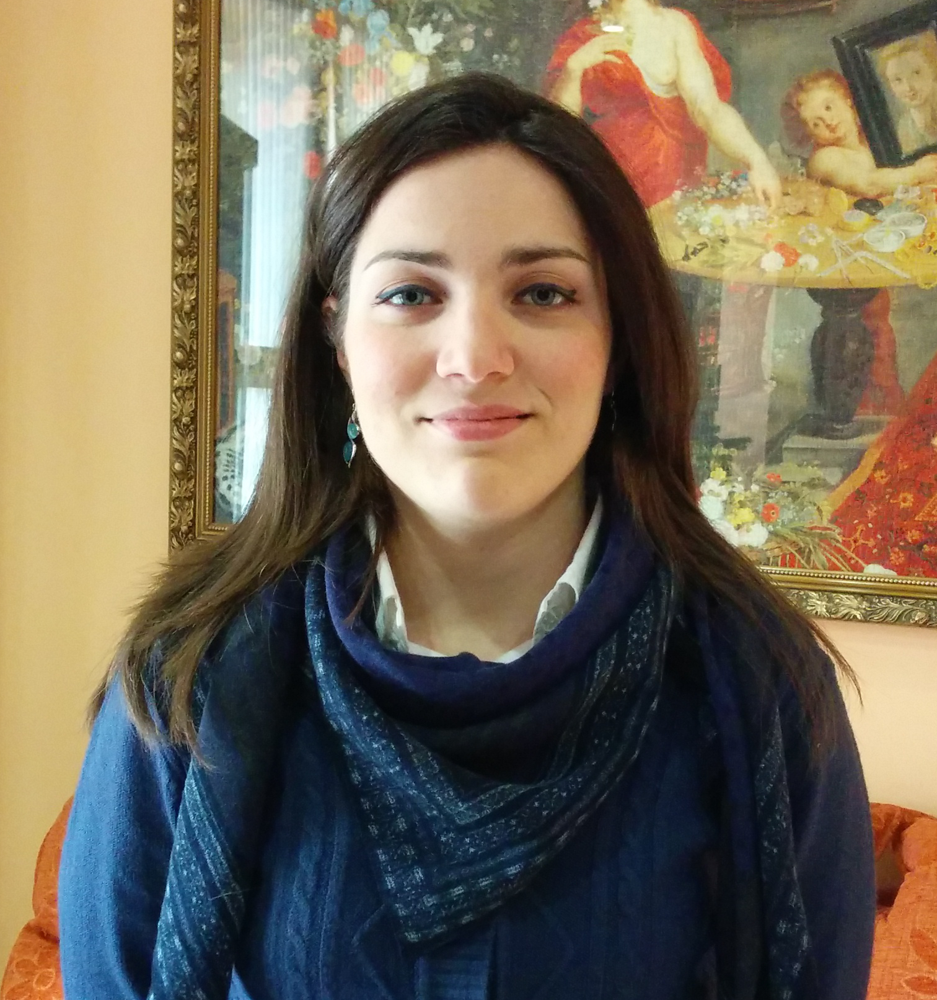

This work was born by the collaboration between University of Naples "Federico II" and University of Bristol.
 

Prof. Mario di Bernardo
Mario di Bernardo (SMIEEE ’06, FIEEE 2012) is Professor of Automatic Control at the University of Naples Federico II, Italy and Professor of Nonlinear Systems and Control at the University of Bristol, U.K. On 28th February 2007 he was bestowed the title of Cavaliere of the Order of Merit of the Italian Republic for scientific merits from the President of Italy.He was elevated to the grade of Fellow of the IEEE in January 2012 for his contributions to the analysis, control and applications of nonlinear systems and complex networks. He was elected to the BoG of the IEEE Circuits and System Society in 2006 and then again in 2009. He is currently VP Financial Activities of IEEE CASS and President of the Italian Society for Chaos and Complexity. His research interests include the analysis, synchronization and control of complex network systems; piecewise-smooth dynamical systems; nonlinear dynamics and nonlinear control with applications to engineering and computational biology.

Dr. Gianfranco Fiore
In 2011 Gianfranco Fiore received his M.Eng. degree in Control Engineering by the University of Naples “Federico II”. In 2015 he received his PhD in Computational Biology and Bioinformatics from the University of Naples “Federico II”, defending a thesis on the “Identification and Control of living cells”. In 2015 he was hired as a Post Doctoral Research Associate from the BBSRC/EPSRC funded Bristol Centre for Synthetic Biology (BrisSynBio) at the University of Bristol. In Bristol he has been focusing his research activity on the design and fabrication of novel microfluidic devices for the real time control of bacterial cell population and, on the design and implementation of embedded cellular controllers.

Francesco Alderisio
Francesco was born in 1989 in San Paolo Belsito, Naples, Italy. He received his M.Eng. degree in Control Engineering in December 2013 by the University of Naples “Federico II”. Between January 2014 and July 2016 he was involved in the European Project “AlterEgo” and in October 2014 he started his PhD in Engineering Mathematics at University of Bristol, under the supervision of Prof. Mario di Bernardo. Since September 2015 he has been an assistant teacher at University of Bristol, teaching first year engineering students on the main mathematics, through both group and front-led sessions. His current research interests include human-robot interaction, and analysis and control of synchronization in complex networks with applications to human movement coordination. He has been a reviewer for conference papers (IEEE Conference on Decision and Control, IEEE Multi-conference on Systems and Control, European Control Conference, American Control Conference), as well as journal papers (IEEE Transactions on Automatic Control, IEEE Transactions on Control of Network Systems, Automatica).

Maria Lombardi
Maria was born in 1991 in Nola, Naples, Italy. She received her M.Eng. degree in Computer Engineering in April 2016 by the University of Naples "Federico II" with a thesis in Nonlinear Control on the “Development and Experimental Validation of a Software tool for the study of Human Multiplayer Coordination”. Her thesis found its context in the European Project “AlterEgo”, which she worked on until July 2016. Furthermore from April to December 2016, she had worked on the design and development of a network for the power supply of electrical vehicles at Ensto Chago, part of Ensto Group in Porvoo, Finland. In January 2017 she started her PhD in Engineering Mathematics at University of Bristol, under the supervision of Prof. Mario di Bernardo.
Prof. Mario di Bernardo
phone: +39 081-7683909fax: +39 081-7683186
e-mail: mario.dibernardo@unina.it
e-mail: enmdb@bristol.ac.uk
Dr. Gianfranco Fiore
e-mail: gf14712@bristol.ac.ukFrancesco Alderisio
e-mail: f.alderisio@bristol.ac.ukMaria Lombardi
e-mail: maria.lombardi@bristol.ac.ukChronos was partly developed under the scope of the European Project AlterEgo (FP7 ICT 2.9 — Cognitive Sciences and Robotics, Grant Number 600610):

If you would like to refer to Chronos within a journal article please cite:
Alderisio, F., Lombardi, M., Fiore, G. and di Bernardo, M., 2017.
A novel computer-based set-up to study movement coordination in human ensembles.
Frontiers in Psychology, 8:967.
[Read paper]
The URL http://dibernardogroup.github.io/Chronos can also be used when referring to the project.